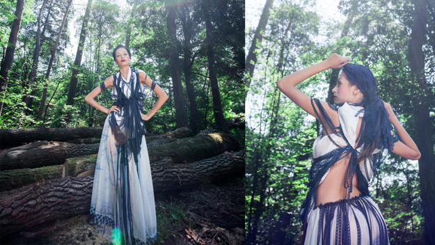

|
TutorialeCreeaza o legatura cu subiectul tau Foloseste Distante Focale Mari "Trage" Wide Incearca obiectivele de 50mm Alb Negru Invata tot ce poti despre lumina Nu iti fie frica sa folosesti blitzul Invata setarile camerei foto Cauta naturalete Implica cadre in miscare |
||
|---|---|---|
Invata tot ce poti despre luminaCea mai buna lumina in fotografie de multe ori nu este atunci cand iesim noi la fotografiat. Ca si regula de aur, lumina naturala excelenta avem dimineata si dupamasa devreme. Lumina directa a soarelui la amiaza ne va oferi niste imagini dure si umbre puternice. Una dintre metodele cele mai folosite este asa zisa iluminare “backlight” (lumina din spate) insa trebuie sa ai grija la flare (reflexii nedorite ale luminii) si de cele mai multe ori este nevoie de un reflector sau de un blitz pentru a da un plus de lumina pe subiect. Deasemenea lumina filtrata de o fereastra este una foarte utilizata si placuta atunci cand se fotografiaza indoor. Reflectorul (in continuare Blenda) este un accesoriu din cele mai comune si este adesea folosit pentru a atenua umbrele de pe subiectul fotografiat. Exista numerosi producatori de blende, printre care si Quantuum. Ca si alternativa la clasicele blende se pot folosi comunele parasolare auto (isi fac treaba binisor insa nu se compara cu solutia dedicata), carton alb, sau polistiren. |

||